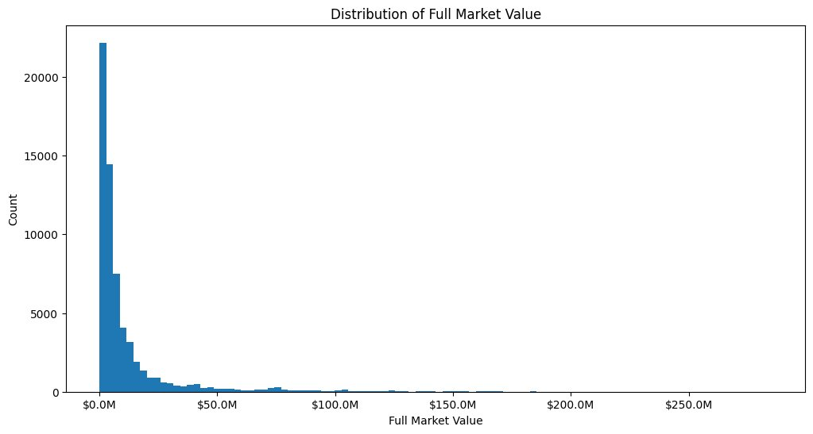
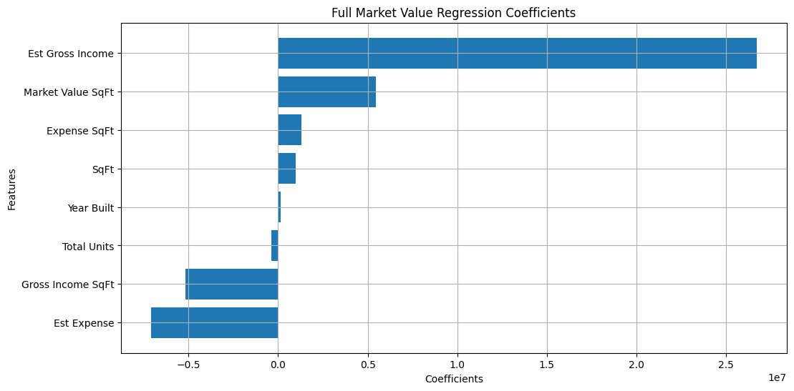
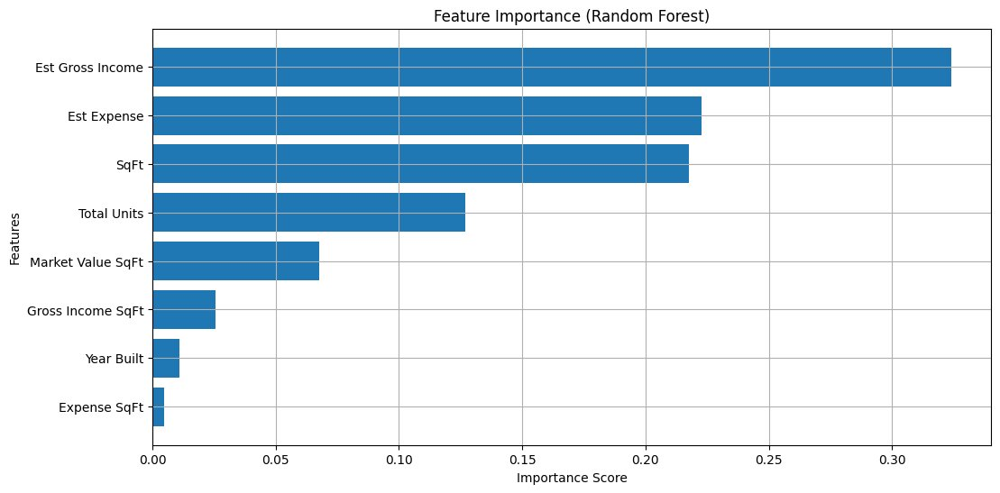

NYC Condominium Valuation
Which building characteristics relate most to the assessed market value of New York City properties?
- Estimated gross income was the strongest predictor in both the linear regression and the random forest.
- On the test set, the tuned random forest reached R² = 0.986, compared with 0.960 for linear regression.
- These scores are too optimistic: two predictors together reproduce the target, and the same buildings appear in both the training and test sets.
The question
Buyers, lenders, and the city all need to estimate what a building is worth. Our team asked how much a building's characteristics, such as size, number of units, age, income, and expenses, relate to its Full Market Value as assessed by the NYC Department of Finance.
The project had two goals: an inferential one (which characteristics matter most) and a predictive one (how well a model can estimate Full Market Value from those characteristics).
Data
The data comes from the NYC Condo Valuation & Comparable Rentals (2012–2018) dataset on Kaggle, which was built from NYC Open Data. We used the Comparable_Properties_Long file. Each row pairs a condo with one of the rental buildings the city uses as a comparable when it values that condo.
| Variable | What it measures |
|---|---|
| Full Market Value | Assessed market value of the building in USD (the response variable) |
| Total Units, SqFt, Year Built | Size and age of the building |
| Est Gross Income, Gross Income SqFt | Estimated yearly income, in total and per square foot |
| Est Expense, Expense SqFt | Estimated yearly expenses, in total and per square foot |
| NOI | Net operating income (income minus expenses) |
| Market Value SqFt | Market value per square foot |
| Distance Miles, Comparable Number | Distance from the condo and the rank of the comparable |
Cleaning
- Removed dollar signs and commas so every column could be read as a number.
- Filled a small number of missing values with the column mean. Distance Miles had the most, with 5,897 missing.
- Standardized all predictors with
StandardScalerso the regression coefficients are on the same scale.

Method
- Feature selection: an OLS regression on all eleven predictors found NOI, Distance Miles, and Comparable Number not significant (p > 0.05), so the team removed them. Eight predictors remained.
- Linear regression: used for interpretation, since its coefficients show the direction and size of each predictor's effect.
- Random forest: used for prediction, tuned with
RandomizedSearchCV(25 candidates, 5-fold cross-validation). The best model used 600 trees with a maximum depth of 10. - Evaluation: a 75/25 train and test split, scored with RMSE, MAE, and R².
Results
Estimated gross income is the strongest predictor
Both models ranked Est Gross Income first. In the linear regression, Est Expense and Gross Income SqFt had the largest negative coefficients. The random forest ranked Est Expense and SqFt second and third, and gave Year Built and Expense SqFt almost no weight.


Model scores on the test set
| Model | R² | RMSE | MAE |
|---|---|---|---|
| Linear regression | 0.960 | $4.42M | $1.83M |
| Random forest (tuned) | 0.986 | $2.59M | $0.82M |
The tuned random forest scored higher than the linear regression on every metric. The next section explains why these scores are higher than they would be on new data.
Limitations
The data has three issues that make the scores above too optimistic.
- Target leakage: Market Value SqFt multiplied by SqFt equals Full Market Value in every row, so two of the predictors together already contain the answer.
- Repeated buildings: the 62,847 rows contain only 9,279 unique buildings, and each appears about seven times. A random split puts the same building in both the training and test sets.
- What the rows describe: the rows are the comparable rental buildings (mostly elevator and walk-up apartment buildings), not the condos themselves.
What a revised version would change
- Drop Market Value SqFt and any other predictor computed from Full Market Value.
- Keep one row per building, or split the data by building so no building appears in both sets.
- Predict log market value, since the values are heavily right-skewed.
Team
This was a five-person team project for CIS 9660 Data Mining for Business Analytics at Baruch College.